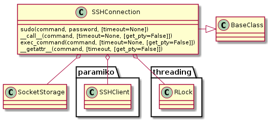

This is the workhorse connection built around the paramiko SSHClient. Updates in paramiko’s interface as well as a better understanding of how it works has lead me to re-start it as the basis for the other connection types. The main way to use it is meant to be with dot-notation. To do ls -a for instance, you would do something like:
connection = SSHConnection(hostname='someip', username='tester')
opened_files = connection.ls('-a')
for line in opened_files.output:
print line
This assumes you have your public keys set up, otherwise you would need to pass in the password to the constructor.
Sometimes people create commands as files with extensions (e.g. wifi.sh) which will mess up the dot-notation, in that case you can pass in the whole thing as a string by calling the connection:
opened_files = connection('wifi.sh -h')
for line in opened_files.output:
print line
for line in opened_files.error:
print line
I have also aliased the call with exec_command so that code that is expecting a paramiko SSHClient can still use it:
stdin, stdout, stderr = connection.exec_command('iperf -s')
There is also a sudo method to let you run something as root:
in_out_error = connection.sudo('nmap -sS "192.168.10.*"', password='testlabs')
for line in in_out_error.output:
print line
This is the equivalent of:
in_out_error = connection('sudo nmap -sS "192.168.10.*"', get_pty=True)
in_out_error.input.write('testlabs')
for line in in_out_error.output:
print line
But I figured it’s such a rare thing that I wouldn’t be able to remember how to do it when I needed it.
There’s also a lock so that if multiple pieces of code are using the same connection they can be thread-safe:
with connection.lock:
in_out_error = connection.cat('/proc/cpuinfo')
Note
I’ve integrated a lock into the calls to exec_command so that it will always be thread-safe (although I think it’s better to use multiple clients when possible instead of sharing one instance). This means that you shouldn’t need to use the lock as shown above. Using the lock can introduce waiting time for users of the shared client and will make them more brittle (one dead client will kill all the threads using it) so it is only meant to test cases where the device seems to be having trouble with multiple ssh-sessions.
SSHConnection |
|
SSHConnection.client |
|
SSHConnection.sudo |
|
SSHConnection.__call__ |
|
SSHConnection.close |
|
SSHConnection.__getattr__ |
|
SSHConnection.lock |

Behind the scenes this is mostly a thin adapter for the SSHClient.
SSHClient() |
A high-level representation of a session with an SSH server. |
And the methods are versions of the exec_command.
SSHClient.exec_command(command[, bufsize, ...]) |
Execute a command on the SSH server. |
To help prevent the mixing up of the different files returned (stdout, stdin, and stderr (not necessarily in that order)) the SSHConnection will returned a named tuple.